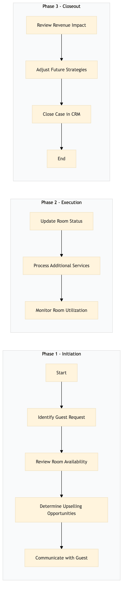

| Role | Steps |
|---|---|
| Front Desk Agent | 1.1 1.4 2.1 2.2 3.3 |
| Revenue Manager | 1.2 1.3 2.3 3.1 3.2 |
| Step | Name | Role | System | Input | Output | KPI | Dec? | Exc? | Pain Point / Risk |
|---|---|---|---|---|---|---|---|---|---|
| 1.1 | Identify Guest Request | Front Desk Agent | Oracle OPERA Cloud | Guest request for late check-out or early check-in | Request logged in Oracle OPERA Cloud | Less than 3 minutes per request | Y | N | Handling multiple requests simultaneously without compromising accuracy |
| 1.2 | Review Room Availability | Revenue Manager | IDeaS G3 RMS | Room availability data from Oracle OPERA Cloud | Availability report | Less than 5 minutes per review | Y | N | Real-time updates on room status across multiple properties |
| 1.3 | Determine Upselling Opportunities | Revenue Manager | IDeaS G3 RMS, SynXis CRS | Availability report and guest profile from Marriott Bonvoy CRM | Upselling strategy | Less than 7 minutes per determination | Y | N | Balancing upselling with guest satisfaction |
| 1.4 | Communicate with Guest | Front Desk Agent | Oracle OPERA Cloud, Book4Time | Upselling strategy and guest contact information | Guest confirmation or denial of additional services | Less than 10 minutes per communication | Y | N | Handling different communication preferences (phone, email, in-person) |
| 2.1 | Update Room Status | Front Desk Agent | Oracle OPERA Cloud | Guest confirmation and upselling details | Updated room status in Oracle OPERA Cloud | Less than 2 minutes per update | N | Y | Ensuring accurate updates without disrupting other reservations |
| 2.2 | Process Additional Services | Front Desk Agent, Revenue Manager | Oracle OPERA Cloud, Oracle MICROS Simphony | Guest confirmation and upselling details | Processed additional services charges | Less than 5 minutes per service | N | Y | Handling different payment methods and ensuring secure transactions |
| 2.3 | Monitor Room Utilization | Revenue Manager | IDeaS G3 RMS, SynXis CRS | Room status updates from Oracle OPERA Cloud | Utilization report | Less than 10 minutes per monitoring session | Y | N | Adjusting strategies based on real-time data |
| 3.1 | Review Revenue Impact | Revenue Manager | IDeaS G3 RMS, SynXis CRS | Utilization report and financial data from Oracle OPERA Cloud | Revenue analysis report | Less than 15 minutes per review | Y | N | Analyzing complex revenue streams |
| 3.2 | Adjust Future Strategies | Revenue Manager | IDeaS G3 RMS, SynXis CRS | Revenue analysis report and market trends | Updated revenue management strategy | Less than 20 minutes per adjustment | Y | N | Balancing short-term gains with long-term planning |
| 3.3 | Close Case in CRM | Revenue Manager | Marriott Bonvoy CRM | Final revenue impact and strategy adjustments | Closed case in Marriott Bonvoy CRM | Less than 5 minutes per closure | N | Y | Ensuring all relevant data is captured for future reference |
The process aims to optimize late check-out and early check-in revenue management at a Marriott full-service hotel by leveraging Oracle OPERA Cloud PMS and other key systems.